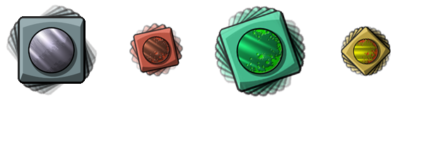

physics_apply_torque(torque)
| 参数 | 描述 |
|---|---|
| torque | 待被施加的转矩（以N·m（牛顿·米）为单位） |
返回: 无
当我们谈论转矩时，我们通常会谈论关于其质心旋转一个实例的力或者冲量的趋向，但是在GameMaker: Studio中，你也能单独为一个实例施加一个转矩，来让它在一个给定方向内旋转。你想施加多大的转矩来得到预计的旋转完全由你分配给实例的支架的大小和密度决定，因为两个属性都旨在定义它的质量，也定义了它的惯量，也就会影响它的转矩！首要的准则是如果一个实例有很大的惯量，你将会需要很大的转矩来使它开始旋转。同时也应该注意像重力、碰撞等其他因素也会影响一个物体的转矩。下图将帮助解释这些东西：

如你所见，你需要用来旋转一个物体的转矩大小取决于它提供的内在的质量和惯量。GameMaker: Studio已经全部基于创建时被分配给实例的支架的大小和密度为你计算好了。还要注意，逆时针转动时，值应当是负的①。
①在Box2D中，角度定义方向与传统定义方式相反。
if keyboard_check(vk_left) physics_apply_torque(-100);
上述代码将会在左方向键按下时用100N·m的转矩逆时针地（向左）旋转实例。
| Converted from CHM to HTML with chm2web Pro 2.85 (unicode) |